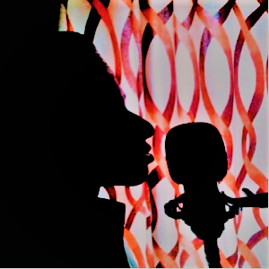

Hafiz Sulfikar is a Quran Reciter & The Founder SLF QURAN. He is Memorized Quran.Hafiz Sulfikar Helps others to memorize the Qur'an.The SLF QURAN was created for this purpose. He recites the Qur'an with his voice on many platforms and believes that it will bring peace to others
©️ SLF QURAN | Developer:Hafiz Sulfikar